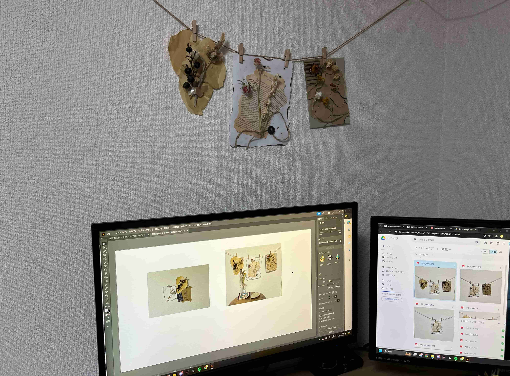
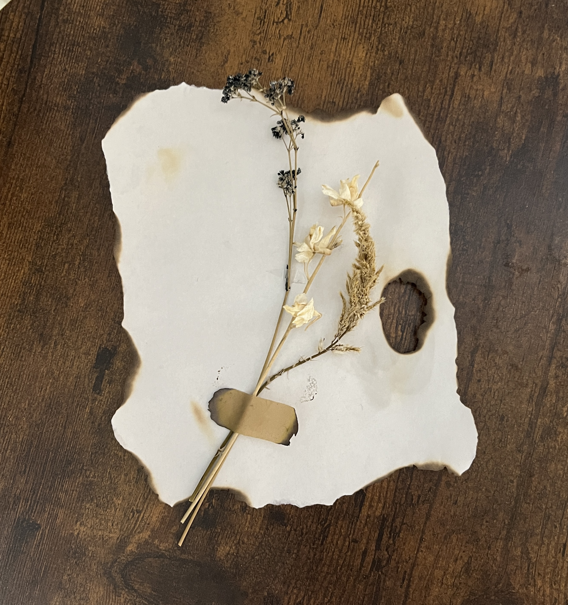
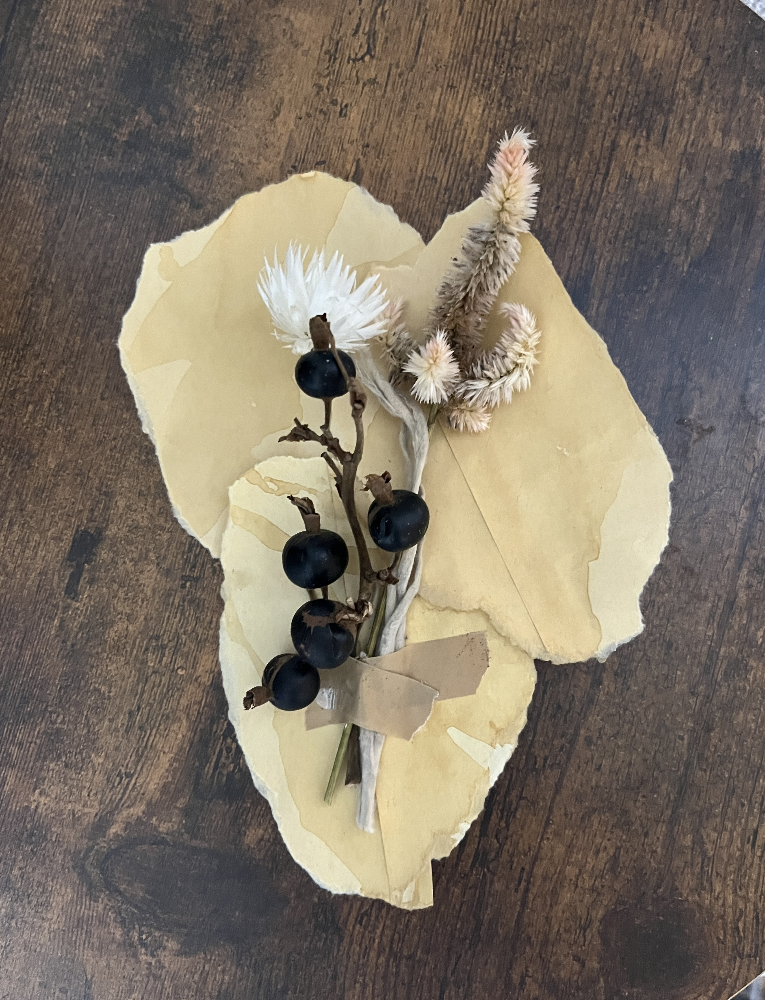
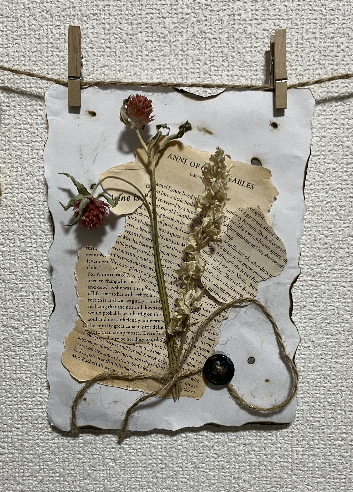
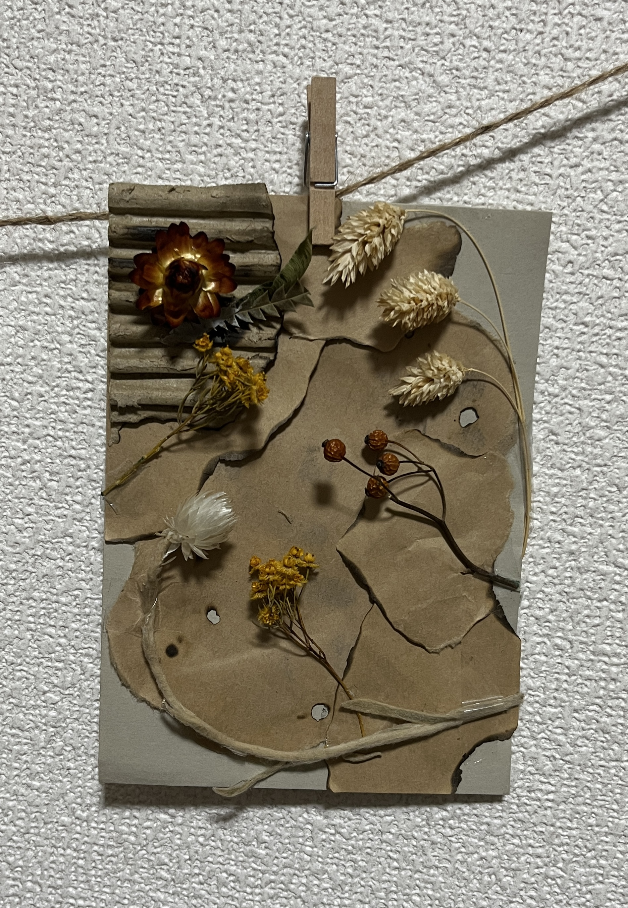
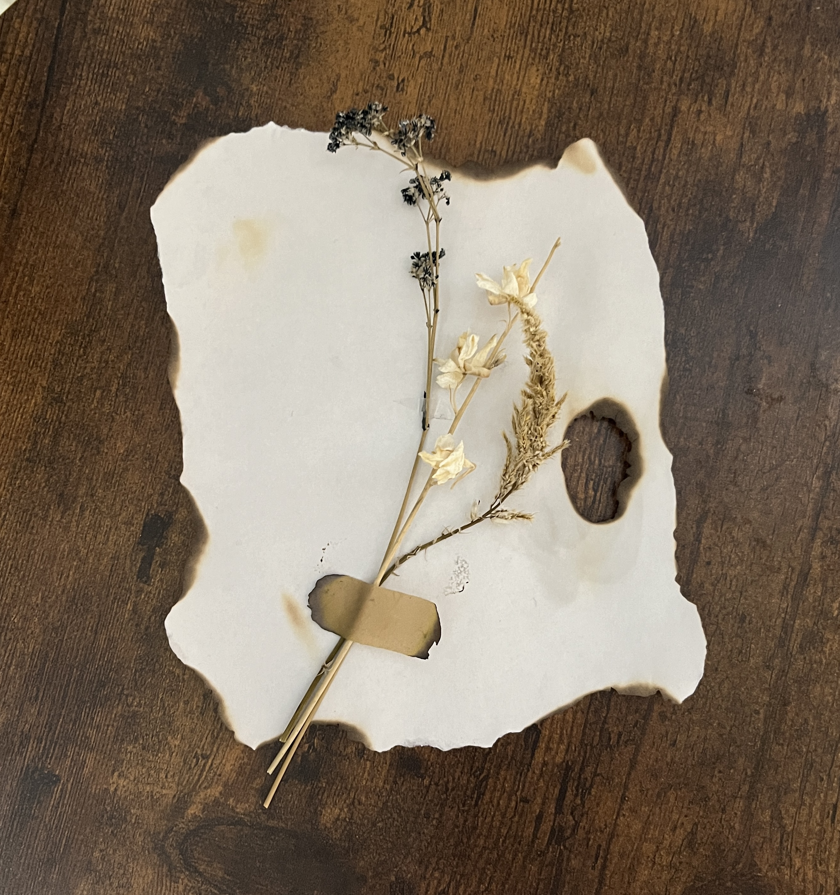
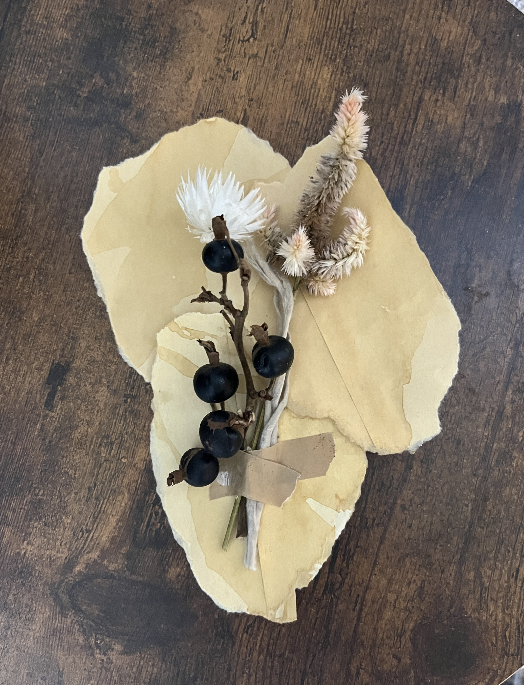
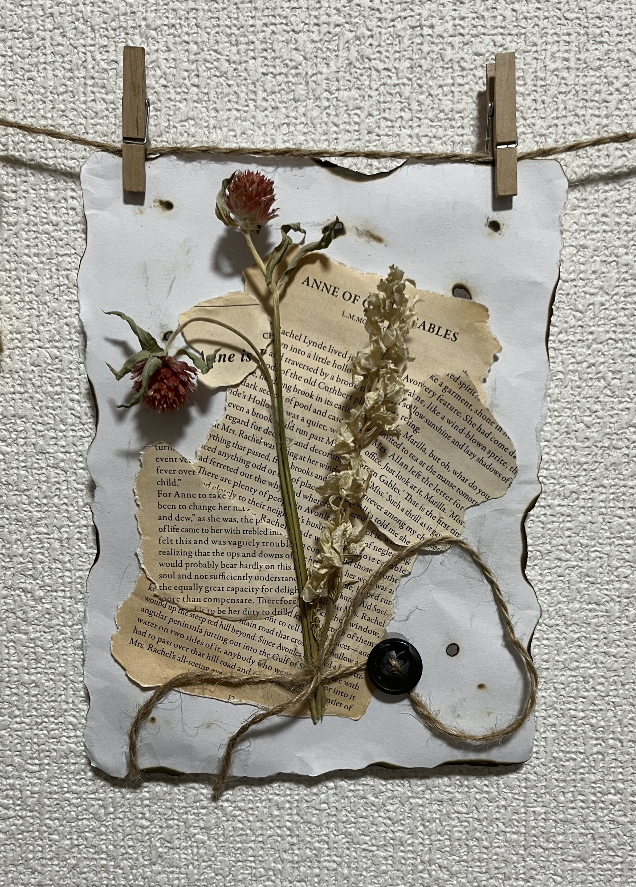
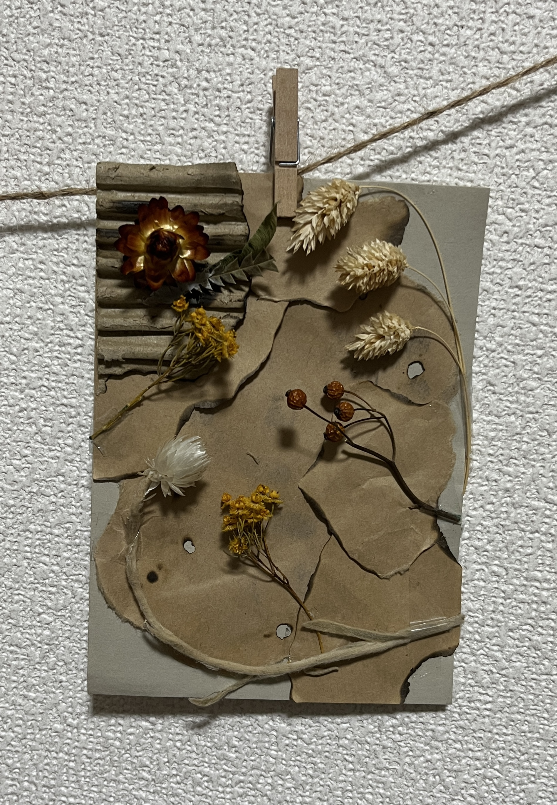

Foliage Plant
Foliage Plant
植物はどのように空間に溶け込み効果を与えるか
About
・はじめに
植物が人間の心理や生活環境に与える影響を探ること を目的としている。
特に、ドライフラワーを中心とした 使用した作品が、人々の生活空間にどのような効果をも たらすのかを研究する。
空間の種類や用途に応じて、 どのような植物のデザインやスタイルが適しているのかについても調べる。
・背景
植物や自然素材をインテリアに取り入れることが、心 理的なリラクゼーションやストレス軽減に寄与するという研究結果が出ていることから、
植物の自然な色合い、 形状を通じて空間に穏やかさをもたらすだけでなく、人々 の集中力や創造性を高める効果もあることが報告されている。
また、特定の空間に適したデザインやスタイルを 選ぶことで、その空間がより快適で居心地の良いものとなり、結果的に生活の質の向上にもつながることがわかり興味が湧いた。
・研究方法
異なる色 彩、質感、形状を持つドライフラワーを用いることで、作品ごとに異なる雰囲気を演出する。
完成した 4 つの作品を、順番に壁に展示していく。
それぞれの作品を異なる場所で飾り、作品 が空間にどのような影響を及ぼすのかを観察する。
また、展示した際の見え方の違いや、作品が空間に与える効果 効果の違いも調べる。
作品の展示だけでなく、周囲の雑貨やインテリアの配置 にも着目する。
成功例
失敗例

・結果
植物の飾り方や配置方法が空間に与える影響が大きいことが明らかになった。
特に、複数の植物やそれに関連する雑貨を一緒に飾ることで、空間全体に統一感が生まれ、
またその空間が落ち着いた雰囲気に変わることがわかった。
空間に植物を配置する際、単体の植物だけでなく、他の関連するアイテム（例えば、小物、装飾品など）と一緒に飾ることが重要だと感じた。
このように複数のアイテムを組み合わせることで、空間に一体感が生まれ、視覚的にも調和がとれ、全体的に落ち着いた印象を与えることがわかった。
PC 周りなどの限られたスペースに植物を配置する場合、それぞれの植物が独立して見え、空間全体にバラバラな雰囲気を与えているように感じた。
この場合、植物が空間の中で浮いてしまい、調和が取れない印象を与えることになる。
そのため、植物を効果的に配置するには、全体のバランスを考慮し、複数の植物や雑貨を調和させることが大切だと感じた。
空間のサイズに合わせて植物を選ぶことで、より効果的に植物の魅力を引き出すことができると感じた。
Work

 







×